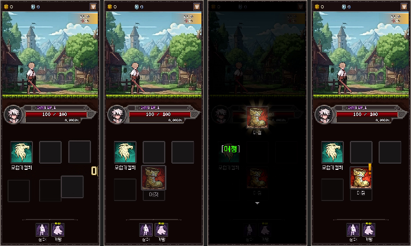
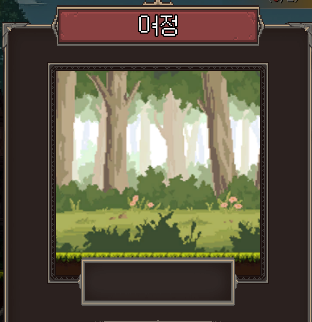
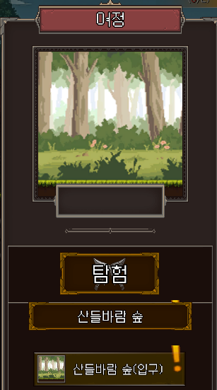
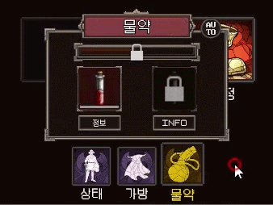
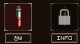
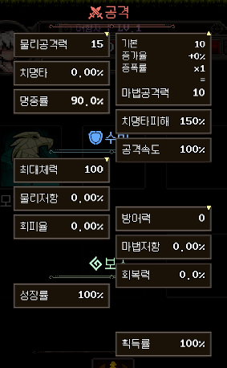
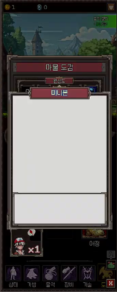

RE001 · PROJECT REVIEW
변화하면 좋은점
— 조언1·조언2 실행 시 게임이 얻는 것
2026-07-08 · 근거: 프로젝트 전체 코드/데이터 분석, QA 세션에서 실증된 개선 사례, 프로젝트 내 영상·스크린샷
조언1실행 목록 — 미구현·리스크 15항목, 파일·함수 단위 근거
조언2전략 제언 — 코어 루프·성장·리텐션·수익화 7개 영역
이 문서두 문서를 실행했을 때의 "변화"를 실제 게임 화면으로 제시
01조언 문서는 얼마나 믿을 만한가
조언1 — "무엇을 해야 하는가"
- 전 항목이 코드에서 확인된 사실 기반 (추정 0건) — 예: 랭크업은
AdventurerRank 세터 호출이 0곳임을 확인하고 기재
- 시트↔JSON 동기화처럼 되돌아갈 수 있는 변경을 명시해 사고 예방
- 바로 착수 가능한 단위로 쪼개져 있어 스프린트 계획에 직결
조언2 — "왜, 어떤 순서로"
- 장르(방치형)의 성공 문법과 현재 코드의 격차를 비교 — "방치 코어 부재"가 핵심 진단
- 이미 있는 자산(데이터 파이프라인, 콤보, 도감)을 재활용하는 저비용 경로 우선
- 착수 순서를 루프 완성 → 성장 축 → 리텐션 → 출시 준비로 제시
평가: 두 문서 모두 "일반론"이 아니라 이 프로젝트의 실제 코드·데이터를 인용함. 실행 시 어떤 변화가 나는지는 다음 슬라이드의 이미 실증된 사례가 증명.
02실증 ① — 연출 품질: 여정 해금 시퀀스
"기획 수정안 → 코드 반영 → 자동 녹화 검증" 파이프라인으로 실제 완성한 사례. 조언에서 말하는 '연출 개선'이 어떤 식으로 진행되는지의 표본.

해금 연출 타임라인 (검증 녹화에서 추출): 페이드 인 → 아이콘 완성+이펙트 → 해금 팝업 → 팝업 종료 후 느낌표+NEW 동시 표시
검증 영상 원본 (Test 메뉴 원클릭 자동 녹화 — Documents/UnlockAnim_0705_171703.mp4)
03실증 ② — 같은 방식으로 잡힌 버그들
BEFORE
여정 팝업 — 장소 미표시

장소명 프레임이 비어 있고, 목적지를 골라도 이미지가 그대로
AFTER (코드 반영 완료)
현재 위치 → 선택 지역 자동 전환

TravelNode 시트의 Sprite/Name으로 표시 — 오픈 시 현재 위치, 클릭 시 해당 지역으로 갱신
BEFORE
물약 — 재오픈마다 쿨타임 리셋

쿨타임 타이머가 전투 밖에서 멈춰 있던 구조적 원인
AFTER (코드 반영 완료)
쿨타임 영속 + 정보 버튼 + 언어 전환

쿨타임이 팝업과 무관하게 진행·복원, [정보] 버튼 연결, 라벨 한/영 통일
04실행 시 변화 ① — 방치 코어 루프 (조언2-1)
현재: 전투는 접속 중에만 의미가 있음 (RE001.mp4 중반부 컷)
지금
게임을 끄면 아무 일도 일어나지 않음 → 재접속 동기가 퀘스트 잔량뿐
오프라인 보상 + 자동 사냥 후
복귀 순간 "부재 중 수익" 팝업 → 수령 → 강해져서 더 깊은 지역 → 다시 방치. 장르의 본 루프가 완성되고 일일 재접속이 습관이 됨. 수익률은 CreatureData 시트에서 자동 산출 — 밸런스도 시트로 운영.
D1 리텐션방치형에서 오프라인 보상 유무는 초기 리텐션의 핵심 변수
세션 수 ↑"수익 상한 도달 전에 수령" 심리로 하루 여러 번 접속
05실행 시 변화 ② — 성장 축과 매일의 이유 (조언2-2·4)
장비/강화 완성 → 정체 구간 해소

스탯 상세 UI는 이미 완성도 있음 — 장비가 붙으면 이 화면이 "성장 확인 허브"가 됨
일일 의뢰 + 도감 보상 → 재방문 루프

모험가 협회 세계관과 자연스럽게 맞는 데일리 구조 (RE001.mp4 후반부 컷)
변화 요약: 성장 축이 레벨 1개 → 레벨+장비+강화+미니언 4개로. "오늘 할 일"이 항상 존재. 랭크(모험가 등급)가 지역·의뢰·제작의 공통 게이트가 되어 진행에 리듬이 생김.
06실행 시 변화 ③ — 완성도와 출시 준비 (조언1-2·조언2-6·7)
첫 10분의 인상은 이미 좋음 (RE001.mp4 초반부) — 남은 것은 신뢰성과 마감
- 한/영 100%: 프리팹에 한글 원문 0개(전부 런타임 로컬라이즈)라는 구조 확인 — 감사에서 나온 미갱신 텍스트만 소거하면 글로벌 대응 완료
- 세이브 견고화: atomic write+백업 → "저장 날아갔다" 리뷰 원천 차단
- 시트→JSON 규율: 로컬 수정분의 시트 반영 체크리스트화 → 데이터 회귀 사고 방지
- 측정 도입: 이탈 지점·과금 전환 로깅 → 감이 아니라 데이터로 튜닝
07결론 — 권장 로드맵
1단계오프라인 보상
자동 사냥 루프
2단계스탯 파이프 정리
장비·강화
3단계일일 의뢰
도감 보상
4단계세이브 견고화
로깅·한영 100%
5단계수익화 부착
(젬·광고·패스)
이 프로젝트는 연출 감각과 데이터 파이프라인이 이미 상용 수준입니다. 실증 사례(슬라이드 02·03)가 보여주듯 "기획 수정안 → 반영 → 자동 검증" 사이클이 작동하고 있으므로, 조언1·2의 항목들은 같은 사이클로 소화 가능합니다. 루프를 닫는 데 집중하면 — 성공 확률이 실제로 높은 게임입니다.
전체 플레이 영상 (RE001.mp4, 5분 32초)